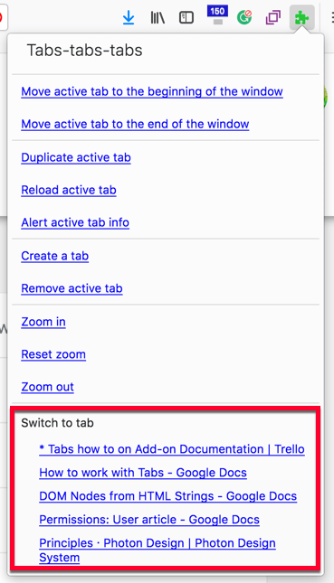
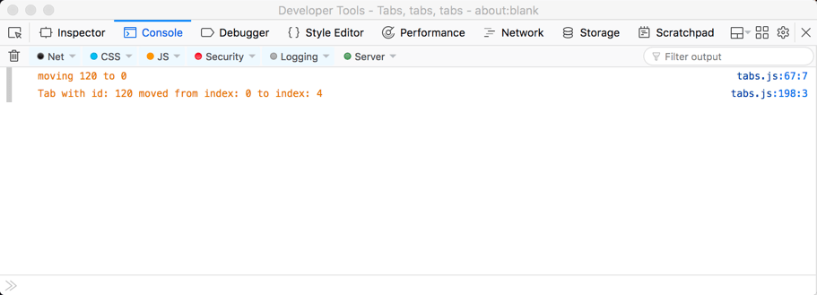

{{AddonSidebar}}
Tabs let a user open several web pages in their browser window and then switch between those web pages. With the Tabs API, you can work with and manipulate these tabs to create utilities that provide users with new ways to work with tabs or to deliver the features of your extension.
In this how-to article we’ll look at:
We then conclude by looking at some other, miscellaneous features offered by the API.
Note: There are some Tab API features covered elsewhere. These are the methods you can use to manipulate tab content with scripts ({{WebExtAPIRef("tabs.connect")}}, {{WebExtAPIRef("tabs.sendMessage")}}, and {{WebExtAPIRef("tabs.executeScript")}}). If you want more information on these methods, see the Concepts article Content scripts and the how-to guide Modify a web page.
For the majority of the Tabs API functions you don’t need any permissions; however, there are some exceptions:
"tabs" permission is needed to access the Tab.url, Tab.title, and Tab.favIconUrl properties of the Tab object. In Firefox, you also need "tabs" to perform a query by URL.The following is how you might request "tabs" permission in your extension’s manifest.json file:
"permissions": [ "<all_urls>", "tabs" ],
This request gives you use of all Tabs API feature on all website your user visits. There is also an alternative approach for requesting permissions to use {{WebExtAPIRef("tabs.executeScript()")}} or {{WebExtAPIRef("tabs.insertCSS()")}} where you don’t need host permission, in the form of "activeTab". This permission provides the same rights as "tabs" with <all_urls>, but with two restrictions:
The benefit of this approach is the user won’t get a permissions warning saying your extension can “Access your data for all websites”. This is because <all_urls> permission gives an extension the ability to execute scripts in any tab, any time it likes, whereas "activeTab" is limited to allowing the extension to perform a user requested action in the current tab.
There will be occasions when you want to get a list of all the tabs in all the browser windows. Other times you might want to find a subset of tabs that match some specific criteria, such as those opened from a specific tab or displaying pages from a particular domain. And once you have your list of tabs, you’ll probably want to know more about their properties.
This is where {{WebExtAPIRef("tabs.query()")}} comes in. Used alone to get all tabs or taking the queryInfo object—to specify query criteria such as whether the tab is active, in the current window, or one or more of 17 criteria—{{WebExtAPIRef("tabs.query()")}} returns an array of {{WebExtAPIRef("tabs.Tab")}} objects containing information about the tabs.
Where you want information about the current tab only, you can get a {{WebExtAPIRef("tabs.Tab")}} object for that tab using {{WebExtAPIRef("tabs.getCurrent()")}}. If you have a tab’s ID, you can get its {{WebExtAPIRef("tabs.Tab")}} object using {{WebExtAPIRef("tabs.get()")}}.
To see how {{WebExtAPIRef("tabs.query()")}} and {{WebExtAPIRef("tabs.Tab")}} are used, let’s walk through how the tabs-tabs-tabs example adds the list of “switch to tabs” to its toolbar button popup.

Here is the manifest.json:
{
"browser_action": {
"browser_style": true,
"default_title": "Tabs, tabs, tabs",
"default_popup": "tabs.html"
},
"description": "A list of methods you can perform on a tab.",
"homepage_url": "https://github.com/mdn/webextensions-examples/tree/master/tabs-tabs-tabs",
"manifest_version": 2,
"name": "Tabs, tabs, tabs",
"permissions": [
"tabs"
],
"version": "1.0"
}
Note the following:
tabs.html is defined as the default_popup in browser_action. It is displayed whenever the user clicks the extension’s toolbar icon.
Permissions includes tabs. This is needed to support the tab list feature, as the extension reads the title of the tabs for display in the popup.
tabs.html defines the content of the extension’s popup:
<!DOCTYPE html> <html> <head> <meta charset="utf-8"> <link rel="stylesheet" href="tabs.css"/> </head> <body> <div class="panel"> <div class="panel-section panel-section-header"> <div class="text-section-header">Tabs-tabs-tabs</div> </div> <a href="#" id="tabs-move-beginning">Move active tab to the beginning of the window</a><br> <!-- Define the other menu items --> <div class="switch-tabs"> <p>Switch to tab</p> <div id="tabs-list"></div> </div> </div> <script src="tabs.js"></script> </body> </html>
This does the following:
div with the ID tabs-list is declared to contain the list of tabs.tabs.js is called.In tabs.js, we’ll see how the list of tabs is built and added to the popup.
First, an event handler is added to execute listTabs() when tabs.html is loaded:
document.addEventListener("DOMContentLoaded", listTabs);
The first thing that listTabs() does is to call getCurrentWindowTabs(). This is where {{WebExtAPIRef("tabs.query()")}} is used to get a {{WebExtAPIRef("tabs.Tab")}} object for the tabs in the current window:
function getCurrentWindowTabs() {
return browser.tabs.query({currentWindow: true});
}
Now, listTabs() is ready to create the content for the popup.
To start with:
tabs-list div.tabs-list div.function listTabs() {
getCurrentWindowTabs().then((tabs) => {
let tabsList = document.getElementById('tabs-list');
let currentTabs = document.createDocumentFragment();
let limit = 5;
let counter = 0;
tabsList.textContent = '';
Next, we’ll create the links for each tab:
title (or the id, if it has no title).id. for (let tab of tabs) {
if (!tab.active && counter <= limit) {
let tabLink = document.createElement('a');
tabLink.textContent = tab.title || tab.id;
tabLink.setAttribute('href', tab.id);
tabLink.classList.add('switch-tabs');
currentTabs.appendChild(tabLink);
}
counter += 1;
}
Finally, the document fragment is written to the tabs-list div:
tabsList.appendChild(currentTabs); }); }
Another related example feature is the “Alert active tab” info option that dumps all the {{WebExtAPIRef("tabs.Tab")}} object properties for the active tab into an alert:
else if (e.target.id === "tabs-alertinfo") {
callOnActiveTab((tab) => {
let props = "";
for (let item in tab) {
props += `${ item } = ${ tab[item] } \n`;
}
alert(props);
});
}
Where callOnActiveTab() finds the active tab object by looping through the {{WebExtAPIRef("tabs.Tab")}} objects looking for the item with active set:
document.addEventListener("click", function(e) {
function callOnActiveTab(callback) {
getCurrentWindowTabs().then((tabs) => {
for (var tab of tabs) {
if (tab.active) {
callback(tab, tabs);
}
}
});
}
}
Having gathered information about the tabs you’ll most likely want to do something with them—either to offer users features for manipulating and managing tabs or to implement functionality in your extension.
The following functions are available:
NOTE:
These functions all require the ID (or IDs) of the tab they are manipulating:
Whereas the following functions will act on the active tab (if no tab id is provided):
The tabs-tabs-tabs example exercises all of these features except for updating a tab’s URL The way in which these APIs are used is similar, so we’ll look at one of the more involved implementations, that of the “Move active tab to the beginning of the window list” option.
But first, here is a demonstration of the feature in action:
{{EmbedYouTube("-lJRzTIvhxo")}}
None of the functions require a permission to operate, so there are no features in the manifest.json file that need to be highlighted.
tabs.html defines the “menu” displayed in the popup, which includes the “Move active tab to the beginning of the window list” option, with a series of <a> tags grouped by a visual separator. Each menu item is given an id, which is used in tabs.js to determine which menu item is being requested.
<a href="#" id="tabs-move-beginning">Move active tab to the beginning of the window</a><br> <a href="#" id="tabs-move-end">Move active tab to the end of the window</a><br> <div class="panel-section-separator"></div> <a href="#" id="tabs-duplicate">Duplicate active tab</a><br> <a href="#" id="tabs-reload">Reload active tab</a><br> <a href="#" id="tabs-alertinfo">Alert active tab info</a><br>
To implement the “menu” defined in tabs.html, tabs.js includes a listener for clicks in tabs.html:
document.addEventListener("click", function(e) {
function callOnActiveTab(callback) {
getCurrentWindowTabs().then((tabs) => {
for (var tab of tabs) {
if (tab.active) {
callback(tab, tabs);
}
}
});
}
}
A series of if statements then look to match the id of the item clicked.
This code snippet is for the “Move active tab to the beginning of the window list” option:
if (e.target.id === "tabs-move-beginning") {
callOnActiveTab((tab, tabs) => {
var index = 0;
if (!tab.pinned) {
index = firstUnpinnedTab(tabs);
}
console.log(`moving ${tab.id} to ${index}`)
browser.tabs.move([tab.id], {index});
});
}
It's worth noting the use of console.log(). This enables you to output information to the debugger console, which can be useful when resolving issues found during development.

The move code first calls callOnActiveTab() which in turn calls getCurrentWindowTabs() to get a {{WebExtAPIRef("tabs.Tab")}} object containing the active window’s tabs. It then loops through the object to find and return the active tab object:
function callOnActiveTab(callback) {
getCurrentWindowTabs().then((tabs) => {
for (var tab of tabs) {
if (tab.active) {
callback(tab, tabs);
}
}
});
}
A feature of tabs is that the user can pin tabs in a window. Pinned tabs are placed at the start of the tab list and cannot be moved. This means that the earliest position a tab can move to is the first position after any pinned tabs. So, firstUnpinnedTab() is called to find the position of the first unpinned tab by looping through the tabs object:
function firstUnpinnedTab(tabs) {
for (let tab of tabs) {
if (!tab.pinned) {
return tab.index;
}
}
}
We now have everything needed to move the tab: the active tab object from which we can get the tab id and the position the tab is to be moved to. So, we can implement the move:
browser.tabs.move([tab.id], {index});
The remaining functions to duplicate, reload, create, and remove tabs are implemented similarly.
The next set of functions enable you to get ({{WebExtAPIRef("tabs.getZoom")}}) and set ({{WebExtAPIRef("tabs.setZoom")}}) the zoom level within a tab. You can also retrieve the zoom settings ({{WebExtAPIRef("tabs.getZoomSettings")}}) but, at the time of writing, the ability to set the settings ({{WebExtAPIRef("tabs.setZoomSettings")}}) wasn’t available in Firefox.
The level of zoom can be between 30% and 300% (represented as decimals 0.3 to 3).
In Firefox the default zoom settings are:
"per-origin", meaning that when you visit a site again, it takes the zoom level set in your last visit.The tabs-tabs-tabs example includes three demonstrations of the zoom feature: zoom in, zoom out, and reset zoom. Here is the feature in action:
{{EmbedYouTube("RFr3oYBCg28")}}
Let’s take a look at how the zoom in is implemented.
None of the zoom functions require permissions, so there are no features in the manifest.json file that need to be highlighted.
We have already discussed how the tabs.html defines the options for this extension, nothing new or unique is done to provide the zoom options.
tabs.js starts by defining several constants used in the zoom code:
const ZOOM_INCREMENT = 0.2; const MAX_ZOOM = 3; const MIN_ZOOM = 0.3; const DEFAULT_ZOOM = 1;
It then uses the same listener we discussed earlier so it can act on clicks in tabs.html.
For the zoom in feature, this runs:
else if (e.target.id === "tabs-add-zoom") {
callOnActiveTab((tab) => {
var gettingZoom = browser.tabs.getZoom(tab.id);
gettingZoom.then((zoomFactor) => {
//the maximum zoomFactor is 3, it can't go higher
if (zoomFactor >= MAX_ZOOM) {
alert("Tab zoom factor is already at max!");
} else {
var newZoomFactor = zoomFactor + ZOOM_INCREMENT;
//if the newZoomFactor is set to higher than the max accepted
//it won't change, and will never alert that it's at maximum
newZoomFactor = newZoomFactor > MAX_ZOOM ? MAX_ZOOM : newZoomFactor;
browser.tabs.setZoom(tab.id, newZoomFactor);
}
});
});
}
This code uses callOnActiveTab() to get the details of the active tab, then {{WebExtAPIRef("tabs.getZoom")}} gets the tab’s current zoom factor. The current zoom is compared to the defined maximum (MAX_ZOOM) and an alert issued if the tab is already at the maximum zoom. Otherwise, the zoom level is incremented but limited to the maximum zoom, then the zoom is set with {{WebExtAPIRef("tabs.getZoom")}}.
Another significant capability offered by the Tabs API is the ability to manipulate the CSS within a tab—add new CSS to a tab ({{WebExtAPIRef("tabs.insertCSS()")}}) or remove CSS from a tab ({{WebExtAPIRef("tabs.removeCSS()")}}).
This can be useful, for example, if you want to highlight certain page elements or change the default layout of the page.
The apply-css example uses these features to add a red border to the web page in the active tab. Here is the feature in action:
{{EmbedYouTube("bcK-GT2Dyhs")}}
Let’s walk through how it’s set up.
To use the CSS features you need either:
"tabs" permission and host permission; or,"activeTab" permission.The latter is the most useful, as it allows an extension to use {{WebExtAPIRef("tabs.insertCSS()")}} and {{WebExtAPIRef("tabs.removeCSS()")}} in the active tab when run from the extension’s browser or page action, context menu, or a shortcut.
{
"description": "Adds a page action to toggle applying CSS to pages.",
"manifest_version": 2,
"name": "apply-css",
"version": "1.0",
"homepage_url": "https://github.com/mdn/webextensions-examples/tree/master/apply-css",
"background": {
"scripts": ["background.js"]
},
"page_action": {
"default_icon": "icons/off.svg",
"browser_style": true
},
"permissions": [
"activeTab",
"tabs"
]
}
You will note that "tabs" permission is requested in addition to "activeTab". This additional permission is needed to enable the extension’s script to access the tab’s URL, the importance of which we’ll see in a moment.
The other main features in the manifest.json file are the definition of:
On startup, background.js sets some constants to define the CSS to be applied, titles for the “page action”, and a list of protocols the extension will work in:
const CSS = "body { border: 20px solid red; }";
const TITLE_APPLY = "Apply CSS";
const TITLE_REMOVE = "Remove CSS";
const APPLICABLE_PROTOCOLS = ["http:", "https:"];
When first loaded, the extension uses {{WebExtAPIRef("tabs.query()")}} to get a list of all the tabs in the current browser window. It then loops through the tabs calling initializePageAction().
var gettingAllTabs = browser.tabs.query({});
gettingAllTabs.then((tabs) => {
for (let tab of tabs) {
initializePageAction(tab);
}
});
initializePageAction uses protocolIsApplicable() to determine whether the active tab’s URL is one the CSS can be applied to:
function protocolIsApplicable(url) {
var anchor = document.createElement('a');
anchor.href = url;
return APPLICABLE_PROTOCOLS.includes(anchor.protocol);
}
Then, if the example can act on the tab, initializePageAction() sets the tab’s pageAction (navigation bar) icon and title to use the “off” versions before making the pageAction visible:
function initializePageAction(tab) {
if (protocolIsApplicable(tab.url)) {
browser.pageAction.setIcon({tabId: tab.id, path: "icons/off.svg"});
browser.pageAction.setTitle({tabId: tab.id, title: TITLE_APPLY});
browser.pageAction.show(tab.id);
}
}
Next, a listener on pageAction.onClicked waits for the pageAction icon to be clicked, and calls toggleCSS when it is.
browser.pageAction.onClicked.addListener(toggleCSS);
toggleCSS() gets the title of the pageAction and then takes the action described:
pageAction icon and title to the “remove” versions.pageAction icon and title to the “apply” versions.function toggleCSS(tab) {
function gotTitle(title) {
if (title === TITLE_APPLY) {
browser.pageAction.setIcon({tabId: tab.id, path: "icons/on.svg"});
browser.pageAction.setTitle({tabId: tab.id, title: TITLE_REMOVE});
browser.tabs.insertCSS({code: CSS});
} else {
browser.pageAction.setIcon({tabId: tab.id, path: "icons/off.svg"});
browser.pageAction.setTitle({tabId: tab.id, title: TITLE_APPLY});
browser.tabs.removeCSS({code: CSS});
}
}
var gettingTitle = browser.pageAction.getTitle({tabId: tab.id});
gettingTitle.then(gotTitle);
}
Finally, to ensure that the pageAction is valid after each update to the tab, a listener on {{WebExtAPIRef("tabs.onUpdated")}} calls initializePageAction() each time the tab is updated to check that the tab is still using a protocol to which the CSS can be applied.
browser.tabs.onUpdated.addListener((id, changeInfo, tab) => {
initializePageAction(tab);
});
There are a couple of other Tabs API features that don’t fit into one of the earlier sections:
If you want to learn more about the Tabs API, check out: